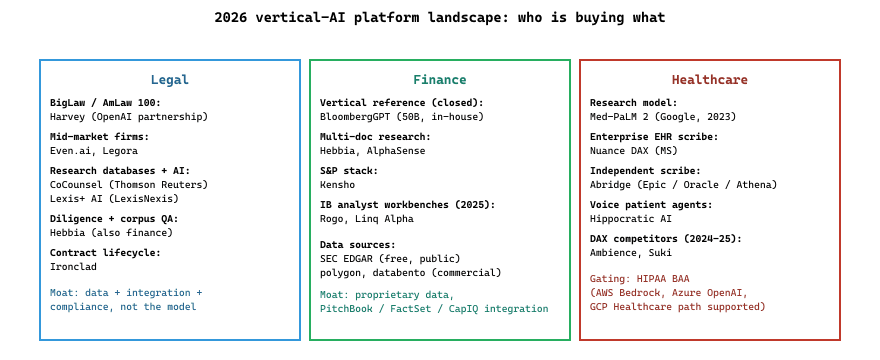

This section catalogs the dominant vertical-AI platforms (LLM-powered SaaS products built for a specific industry rather than general-purpose chat assistants) across legal, finance, healthcare, government, manufacturing, education, and cybersecurity as of mid-2026. For each, the entry names the product, the year it launched (or added LLM features), what makes it distinct, and when to pick it over its competitors. Use this as a starting list when scoping a procurement or build-versus-buy decision in an industry vertical.
74.1.1 Legal
- Harvey (Harvey, 2022) is the GPT-based legal copilot deployed at top-tier (BigLaw, AmLaw 100) firms, with a public OpenAI partnership and substantial in-house fine-tuning on legal corpora. Its objective is to be the AI assistant for elite legal work (due diligence, contract review, brief drafting) at firms whose hourly rates make even modest productivity gains worth the subscription. Pick Harvey when you are at a top-tier firm and budget is not the constraint; for mid-market firms, Even.ai or Legora cover similar ground at lower cost.
- Hebbia (Hebbia, 2020) is the long-document analysis platform serving both finance and law, distinguished by its multi-step ISO reasoning engine that processes thousands-of-pages documents. Its objective is to answer fact-finding questions across enormous document corpora (10-K filings, M&A diligence rooms, legal discovery), which matters when standard RAG fails at scale. Pick Hebbia for diligence and research over million-token document sets.
- CoCounsel (Casetext / Thomson Reuters, 2023) is the legal-research AI built on Casetext's case database, now part of Thomson Reuters. Its objective is to combine legal-research access with AI summary and analysis in a single workflow, which matters for firms already on Thomson's legal-research stack.
- Lexis+ AI (LexisNexis, 2023) is the LexisNexis competitor to CoCounsel: AI on top of LexisNexis's case and statute database. Pick whichever legal-research database your firm already pays for; the AI layer is comparable.
- Even.ai and Legora (2025) are mid-market legal-AI entrants competing with Harvey. Their objective is to deliver 80% of Harvey's capability at a fraction of the cost, which matters for firms that cannot justify Harvey's pricing.
- Ironclad (Ironclad, 2014; AI integrations 2023+) is the contract lifecycle management (CLM) platform with AI for contract drafting, review, and obligation extraction. Its objective is to be the system of record for contracts plus the AI layer on top, which matters because contract data is most valuable when it lives in a CLM.
74.1.2 Finance
- BloombergGPT (Bloomberg, 2023; 50B params) is the in-house finance-domain LLM trained on Bloomberg's proprietary financial data plus public web. Its objective is to demonstrate that domain-specific LLMs trained on proprietary data outperform general models on finance tasks, which mattered as one of the first published vertical LLM cases. Pick this only as a case study for understanding vertical LLM economics; the model is not publicly available.
- Hebbia (see Legal section) is also the leading equity research and diligence platform; the same product covers both verticals. Its 2024-25 product updates added multi-step research agents that decompose complex questions across the document set. Pick Hebbia when you need cross-document financial research at scale.
- AlphaSense (AlphaSense, 2008; AI features 2023+) is the market-intelligence platform with embedded LLMs for earnings-call analysis, expert-call transcripts, and competitive intelligence. Its objective is to be the system-of-record for unstructured-financial-content research plus AI on top. Pick AlphaSense for systematic competitive intelligence; for one-off diligence, Hebbia is more focused.
- Kensho (S&P Global, 2013) is S&P Global's AI subsidiary providing search, classification, and analytics over S&P's data. Its objective is to be the AI layer for S&P customers. Pick Kensho when you are already an S&P data customer.
- Rogo and Linq Alpha (2024-2025) are recent finance-AI entrants competing for investment-banking workflows. Their objective is to be the AI-native analyst-workbench that integrates with PitchBook, FactSet, and CapIQ data; pick when you want a more analyst-focused workflow than Hebbia.
74.1.3 Healthcare
- Med-PaLM (Google, 2022; Med-PaLM 2 in 2023) is Google's medical-domain LLM that became the first to surpass USMLE pass-level on multiple-choice medical exams. Its objective was to demonstrate medical-knowledge LLM capability and push the broader research direction, which mattered as the seminal vertical-medical-LLM publication. Pick Med-PaLM as a research reference; for production deployment, MedGemma and other open clinical models are accessible.
- Nuance DAX Copilot (Microsoft via Nuance, 2023) is the ambient clinical documentation product that listens to doctor-patient conversations and generates SOAP notes. Its objective is to eliminate after-hours charting (the dominant source of physician burnout), which matters because clinical scribe products are the highest-ROI healthcare AI. Pick DAX for enterprise Microsoft-stack hospitals; for smaller practices, Abridge, Ambience, and Suki offer similar functionality at different price points.
- Abridge (Abridge, 2018) is the leading independent clinical-conversation summarization product, distinguished by deep EHR integrations (Epic, Oracle Health, Athena). Its objective is to be the best clinical scribe for hospitals and large medical groups, which matters because EHR integration is the binding deployment factor. Pick Abridge for hospital deployments with major EHR integration needs.
- Hippocratic AI (Hippocratic AI, 2023) is the healthcare-LLM company building voice agents for non-diagnostic patient interactions (post-discharge follow-ups, chronic-disease check-ins). Its objective is to provide safer-than-human conversational agents for routine clinical communication, which matters as a partial answer to clinician shortages. Pick Hippocratic for voice-agent patient interactions; check HIPAA compliance and clinical-trial evidence carefully.
- Ambience Healthcare and Suki AI (2024-2025) are clinical voice-scribe products competing with DAX. Their objective is to provide DAX-equivalent quality at lower cost and with more vendor diversity, which matters because DAX is the dominant incumbent.
For healthcare deployments, the binding question is which API providers offer a HIPAA Business Associate Agreement (BAA). As of mid-2026: Anthropic via AWS Bedrock, Azure OpenAI, and GCP Healthcare data path all support BAAs. Direct API tiers from OpenAI, Anthropic, and Google typically do not without enterprise contracts. Check your contract before designing on assumed compliance; one missing BAA invalidates the entire deployment plan.

74.1.4 Education
- Khanmigo (Khan Academy).
- Duolingo Max.
- Gradescope (Turnitin / Chegg).
74.1.5 Cyber, code, and others
- Microsoft Security Copilot.
- Snyk DeepCode AI: security-focused code analysis.
- CrowdStrike Charlotte AI.
- Glean: enterprise search.
Most "vertical AI" products are LangChain-style wrappers over frontier APIs with a curated knowledge base, vertical-specific eval, and SOC2 / HIPAA / FINRA compliance work. The defensible moat is data, integration, and compliance, not the model.
What's Next?
In the next section, Section 74.2: Libraries & Frameworks, we build on the material covered here.